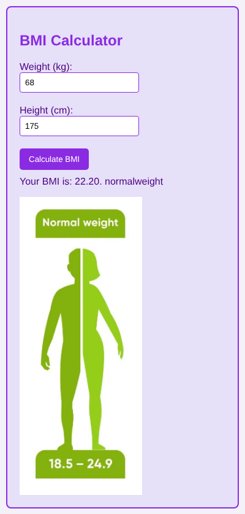
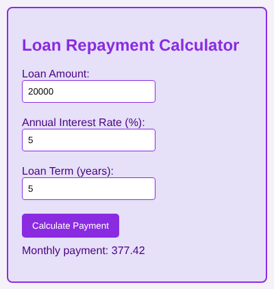
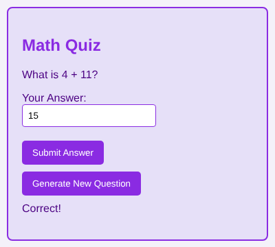

Interactive web calculators
My first JavaScript project: three small browser tools on one page — a BMI calculator, a loan repayment calculator and a maths quiz. It's simple, but it's where I first learned to take user input, run a calculation and update the page.

BMI calculator
Takes weight and height, calculates BMI to two decimal places, names the category and swaps in a matching illustration.

Loan repayment
Uses the standard amortisation formula to turn a loan amount, annual rate and term into a monthly payment.

Maths quiz
Generates random +, −, × and ÷ questions and checks the answer. Subtraction never goes negative and division always comes out whole.
The logic behind it
Loan repayment formula
The yearly rate is turned into a monthly rate and the term into a number of monthly payments, then the amortisation formula gives a fixed monthly payment.
var interest = annualRate / 100 / 12; // monthly rate
var payments = years * 12;
var x = Math.pow(1 + interest, payments);
var monthly = (principal * x * interest) / (x - 1);Fair quiz questions
Two random numbers from 1 to 20 and a random operation are picked. For subtraction the numbers are swapped if needed so the answer is never negative; for division the first number is built by multiplying, so the answer is always a whole number.
What I'd do differently now
Revisiting my first project shows how much my coding has changed since Year 1.
Things I'd fix
- Input validation: empty or zero inputs give “NaN”, and a 0% interest rate divides by zero.
- Consistent rules: the code's overweight cut-off (23.9) doesn't match the 24.9 shown in the image.
- Cleaner code: declare every variable, keep IDs unique and move the JavaScript into its own file.
What it taught me
- How to read form inputs and update the page with the DOM.
- Turning a real-world formula into code.
- That the hard part isn't the happy path — it's handling unexpected input, which I now design for from the start.
The live version includes one small fix so the first quiz question appears when the page loads; everything else is as I built it in Year 1.